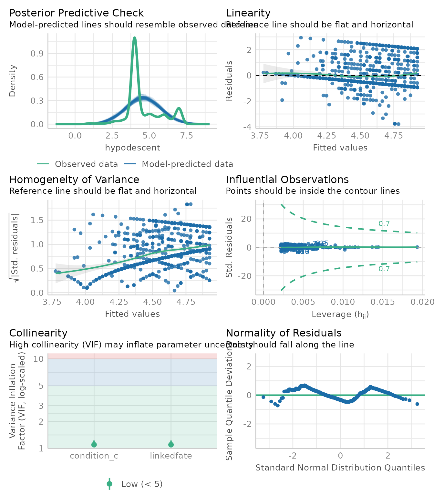

Introduction to mediation analysis with JSmediation
Cédric Batailler
2021-09-02
Source:vignettes/jsmediation.Rmd
jsmediation.RmdOverview
The JSmediation package was designed to help intuitively typing the code to test mediations. In this vignette, we will use it to assess a simple mediation.
Conducting a Simple Mediation
Simple mediation analysis refers to the analysis testing whether the effect of an independent variable on a dependent variable goes through a third variable (the mediator). The ho_et_al data set, shipped with the JSmediation package, contains data illustrating a case of simple mediation. This data set contains the data collected by Ho et al. in a paper focusing on hypodescent (2017), a rule sometimes use when people have to perform multiracial categorization and where a perceivers associate a biracial person more easily to their lowest status group.
In this experiment, Ho et al. (2017) made the hypothesis that a Black American participants exposed to the discrimination of Black-White biracials would be more likely to associate Black-White biracials with Black Americans rather than with White Americans. In other words, participants of their experiment would be more likely to use the hypodescent rule when exposed to high discrimination content compared to low discrimination content. In the experiment that we will investigate, the authors went further and tested whether the effect of the discrimination condition on the use of hypodescent was mediated by a feeling of linked fate between the participants (Black Americans) and Black-White biracials (Ho et al., 2017).
In this vignette, we will use the ho_et_al data set to test whether feeling of linked fate mediates the relationship between the exposition to a high discrimination content and the use of hypodescent among Black Africans.
Formalization of Simple Mediation
Simple mediation is often times summarized with one equation (Baron & Kenny, 1986; Cohen & Cohen, 1983):
\[ c = c' + a \times b \]
with \(c\) the total effect of the independent variable (\(X\)) on the dependent variable (\(Y\)), \(c'\) the direct of \(X\) on \(Y\), and \(a \times b\) the indirect effect of \(X\) on \(Y\) through the mediator variable (\(M\); see Models section of the mdt_simple help page).
To assess whether the indirect effect is different from the null, one has to assess the significance against of both \(a\) (the effect of \(X\) on \(M\)) and \(b\) (effect of \(M\) on \(Y\) controlling for the effect of \(X\)). Both \(a\) and \(b\) need to be simultaneously significant for an indirect effect to be claimed (Yzerbyt et al., 2018).
Because we want to test whether the feeling of linked fate is mediating the effect of the discrimination condition on the use of hypodescent, we must test whether the discrimination condition predicts the feeling of linked fate and whether feeling of link fate predicts the use of hypodescent (when controlling for the effect of the discrimination condition). The JSmediation package will help us in that regard.
Our first step will be to attach the JSmediation package to our environment. This will allow us to use the functions and data sets shipped with the package.
Data Preparation
To begin with the analysis, we will take a look at the ho_et_al data set.
data(ho_et_al)
head(ho_et_al)
#> id condition sdo linkedfate hypodescent
#> 1 2 Low discrimination 1.8125 6.000 2.333333
#> 2 3 High discrimination 1.5625 5.875 6.000000
#> 3 4 High discrimination 1.7500 6.625 6.000000
#> 4 5 Low discrimination 4.2500 5.125 5.666667
#> 5 6 Low discrimination 1.9375 4.375 4.000000
#> 6 9 High discrimination 2.8750 3.750 4.000000This data set contains 5 columns: * ìd: a unique identifier for each participant, * condition: the discrimination condition of the participants (either “Low discrimination” or “High discrimination”), * sdo: a measure of Social Dominance Orientation (SDO) of the participant which is extensively used in our example of [moderated mediation]((moderated_mediation_analysis.html), * linkedfate: the feeling of linked fate between the participants and Black-White biracials, * hypodescent: the tendency to use the hypodescent rules in multiracial categorization (see, Ho et al. 2017).
This data set is almost ready for our analysis. The only thing that we need is a data frame (or a tibble) with the value of our different variables for each participant (i.e., the independent variable, the dependent variable, and the mediator). Our data, however, must be properly formatted for the analysis. In particular, every variable must be coded as a numeric variable.
Because the condition variable is coded as a character (and not as a numeric)—a format which is not supported by JSmediation, we will need to pre-process our data set. Thanks to the build_contrast function, we will create a new variable in ho_et_al (condition_c) representing the discrimination condition as a numeric variable.
ho_et_al$condition_c <- build_contrast(ho_et_al$condition,
"Low discrimination",
"High discrimination")
head(ho_et_al)
#> id condition sdo linkedfate hypodescent condition_c
#> 1 2 Low discrimination 1.8125 6.000 2.333333 -0.5
#> 2 3 High discrimination 1.5625 5.875 6.000000 0.5
#> 3 4 High discrimination 1.7500 6.625 6.000000 0.5
#> 4 5 Low discrimination 4.2500 5.125 5.666667 -0.5
#> 5 6 Low discrimination 1.9375 4.375 4.000000 -0.5
#> 6 9 High discrimination 2.8750 3.750 4.000000 0.5
Using mdt_fit
Now that we have a data frame ready for analysis, we will use the mdt_simple function to fit a simple mediation model. Any mediation model supported by JSmediation comes with a mdt_* function. These functions need the users to indicate the data set used for the analysis as well as the variable relevant for the analysis thanks to the function argument. Once done, it will run the relevant linear regression in order to test the conditions necessary for mediation.
mediation_fit <-
mdt_simple(ho_et_al,
IV = condition_c,
DV = hypodescent,
M = linkedfate)The mediation_fit model that we just created contains every bit of information necessary to use a joint-significance approach to assess simple mediation (Yzerbyt et al., 2018).
Working with mediation_model Objects
Before diving into the results, because the joint-significance approach runs linear regression under the hood, we will test the assumptions of ordinary least square for each of the regression used by mdt_simple (Judd et al., 2017). To do so, we will use the check_model from the performance package function which prints several diagnostic plots (Lüdecke et al., 2021)1.
We will first extract the models used by mdt_simple, and then run the check_model function. The extract_model function will be helpful to that regard. This function uses a mediation model as a first argument, and the model name (or model index) as a second argument. It then returns a linear model object (i.e., an lm object).
first_model <- extract_model(mediation_fit, step = "X -> M")
performance::check_model(first_model)
#> Registered S3 method overwritten by 'see':
#> method from
#> plot.visualisation_recipe datawizard
We will do the same thing for the two other models mdt_simple has fitted.
second_model <- extract_model(mediation_fit, step = 2)
performance::check_model(second_model)
third_model <- extract_model(mediation_fit, step = 3)
performance::check_model(third_model)
Thanks to these plots, we can now interpret the results of the mediation knowing whether their data suffer from any violation (Judd et al., 2017).
Interpreting the Results of a Mediation Model
Now that we check for our assumptions, we can interpret our model. To do so, we simply have to call model_fit.
mediation_fit
#> Test of mediation (simple mediation)
#> ==============================================
#>
#> Variables:
#>
#> - IV: condition_c
#> - DV: hypodescent
#> - M: linkedfate
#>
#> Paths:
#>
#> ==== ============== ===== =======================
#> Path Point estimate SE APA
#> ==== ============== ===== =======================
#> a 0.772 0.085 t(822) = 9.10, p < .001
#> b 0.187 0.033 t(821) = 5.75, p < .001
#> c 0.171 0.081 t(822) = 2.13, p = .034
#> c' 0.027 0.083 t(821) = 0.33, p = .742
#> ==== ============== ===== =======================
#>
#> Indirect effect index:
#>
#> Indirect effect index is not computed by default.
#> Please use add_index() to compute it.
#>
#> Fitted models:
#>
#> - X -> Y
#> - X -> M
#> - X + M -> YIn this summary, we can see that both \(a\) and \(b\) paths are significant, and we can therefore conclude that the indirect effect of the discrimination condition on hypodescent used passing through the feeling of linked fate is significant (Yzerbyt et al., 2018).
Reporting a Simple Mediation
Thanks to the mdt_simple function, we almost have every information to report our joint-significance test (Yzerbyt et al., 2018). Besides reporting the significance of \(a\) and \(b\), it is sometimes recommended to report the index of indirect effect, a single value accounting for \(a \times b\). Wa can compute this index thanks to Monte Carlo methods thanks to the add_index function. This functions adds the indirect effect to the model summary object.
model_fit_with_index <- add_index(mediation_fit)
model_fit_with_index
#> Test of mediation (simple mediation)
#> ==============================================
#>
#> Variables:
#>
#> - IV: condition_c
#> - DV: hypodescent
#> - M: linkedfate
#>
#> Paths:
#>
#> ==== ============== ===== =======================
#> Path Point estimate SE APA
#> ==== ============== ===== =======================
#> a 0.772 0.085 t(822) = 9.10, p < .001
#> b 0.187 0.033 t(821) = 5.75, p < .001
#> c 0.171 0.081 t(822) = 2.13, p = .034
#> c' 0.027 0.083 t(821) = 0.33, p = .742
#> ==== ============== ===== =======================
#>
#> Indirect effect index:
#>
#> - type: Indirect effect
#> - point estimate: 0.144
#> - confidence interval:
#> - method: Monte Carlo (5000 iterations)
#> - level: 0.05
#> - CI: [0.0901; 0.209]
#>
#> Fitted models:
#>
#> - X -> Y
#> - X -> M
#> - X + M -> YThe only thing left to do is to report the mediation analysis:
First, we examined the effect of the discrimination condition (low vs. high) on hypodescent use. This analysis revealed a significant effect, t(822) = 2.13, p = .034. > > We then tested our hypothesis of interest, namely, we tested whether the sentiment of linked fate between Black Americans and Black-White biracials mediated the effect of the discrimination condition on hypodescent. To do so, we conducted a joint significant test (Yzerbyt et al., 2018). This analysis revealed a significant effect of discrimination condition on linked fate, t(822) = 9.10, p < .001, and a significant effect of linked fate on hypodescent, controlling for the discrimination condition, t(821) = 5.75, p < .001. The effect of discrimination condition on hypodescent after controlling for the feeling of linked fate was no longer significant, t(821) = 0.33, p = .742. Consistently with this analysis, the Monte Carlo confidence interval for the indirect effect did not contain 0, CI95% [0.0889; 0.208]. This analysis reveals that the feeling of linked fate mediates the effect of the discrimination condition on hypodescent.
Miscellaneous
JSmediation makes conducting a mediation analysis easy with the mdt_* functions, but they are not the only function in the package. Some functions will help with the linear regression models fitted during the analysis.
check_assumptionstests every model’s OLS assumptions using the performance package.plot_assumptionsplots plots diagnostic of the models’ OLS assumptions using the performance package.extract_modelreturns one of the model used (as anlmobject).extract_modelsreturns a named list of the models used.extract_tidy_modelsreturns a data frame containing models summary information à la broom (Robinson et al., 2021).display_modelsprint a summary of eachlmmodel.
References
Baron, R. M., & Kenny, D. A. (1986). The moderator-mediator variable distinction in social psychological research: Conceptual, strategic, and statistical considerations. Journal of Personality and Social Psychology, 51(6), 1173–1182. https://doi.org/10.1037//0022-3514.51.6.1173
Cohen, J., & Cohen, P. (1983). Applied multiple regression/correlation analysis for the behavioral sciences (2nd ed). L. Erlbaum Associates.
Ho, A. K., Kteily, N. S., & Chen, J. M. (2017). “You’re one of us”: Black Americans’ use of hypodescent and its association with egalitarianism. Journal of Personality and Social Psychology, 113(5), 753–768. https://doi.org/10.1037/pspi0000107
Judd, C. M., McClelland, G. H., & Ryan, C. S. (2017). Data analysis: A model comparison approach to regression, ANOVA, and beyond (Third Edition). Routledge, Taylor & Francis Group.
Lüdecke, D., Ben-Shachar, M., Patil, I., Waggoner, P., & Makowski, D. (2021). Performance: An R Package for Assessment, Comparison and Testing of Statistical Models. Journal of Open Source Software, 6(60), 3139. https://doi.org/10.21105/joss.03139
Robinson, D., Hayes, A., & Couch, S. (2021). Broom: Convert statistical objects into tidy tibbles [Manual].
Yzerbyt, V., Muller, D., Batailler, C., & Judd, C. M. (2018). New recommendations for testing indirect effects in mediational models: The need to report and test component paths. Journal of Personality and Social Psychology, 115(6), 929–943. https://doi.org/10.1037/pspa0000132
Recent versions of JSmediation offers the
check_assumptionsandplot_assumptionsto help you check the OLS assumptions of the fitted model.↩︎